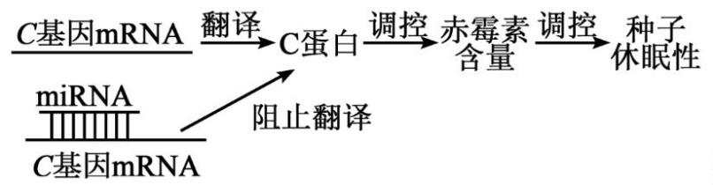
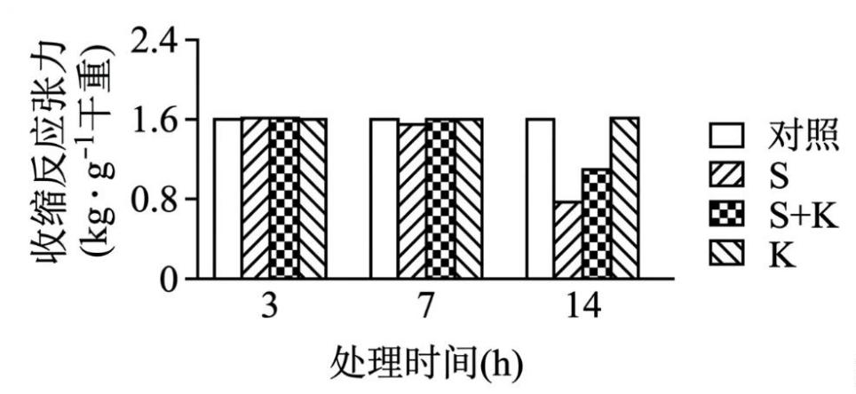
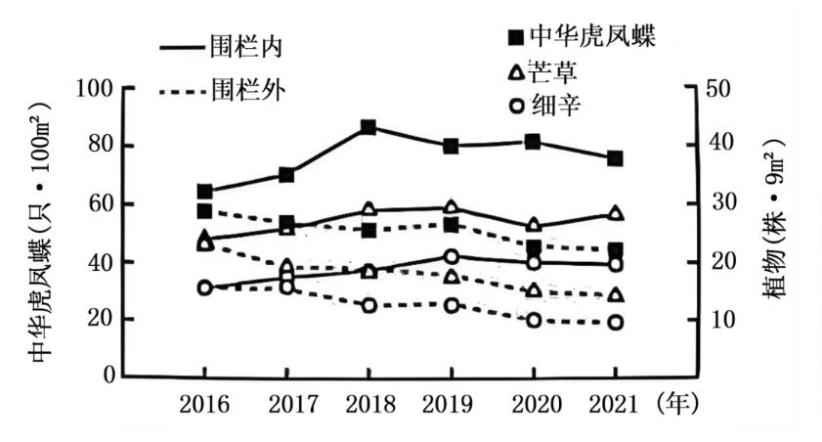
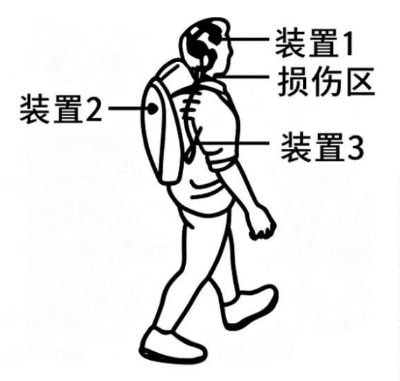
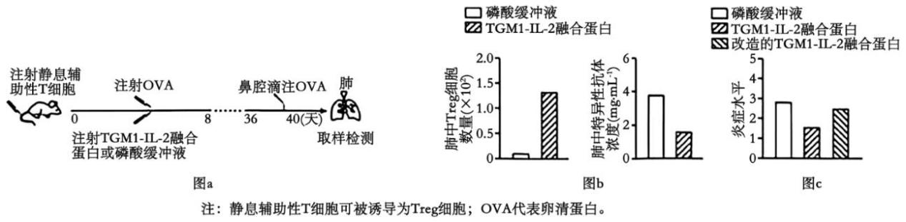
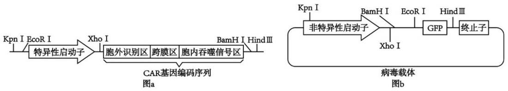

2026年普通高中学业水平选择性考试（湖南卷） 生物学
本试卷满分100分，考试时间75分钟。
一、选择题：本题共12小题，每小题2分，共24分。在每小题给出的四个选项中，只有一项是符合题目要求的。
相关题目：第 1 题 · 第 2 题 · 第 3 题 · 第 4 题 · 第 5 题 · 第 6 题 · 第 7 题 · 第 8 题 · 第 9 题 · 第 10 题 · 第 11 题 · 第 12 题
返回原卷说明与一、单项选择题
题目与已知条件
关于细胞的生命历程，下列叙述错误的是（ ）
B.人的肝细胞中RNA聚合酶基因表达，胰岛素基因不表达
C.毛囊细胞合成黑色素的功能下降是老年人白发产生的直接原因
分步解析
- 神经元是高度分化的细胞，不再分裂，没有细胞周期，A错误。
- RNA聚合酶基因是管家基因，各细胞都表达；胰岛素基因只在胰岛B细胞表达，B正确。
- 老年人毛囊细胞中酪氨酸酶活性降低，黑色素合成减少，头发变白，C正确。
- 蝌蚪尾的消失是细胞凋亡，D正确。
检查与易错点
受精卵、早期胚胎细胞能连续分裂，神经元不能。
本题来源：doc-hunan-q
返回原卷说明与一、单项选择题
题目与已知条件
大规模生产治疗性单克隆抗体时，常采用悬浮细胞表达系统。下列叙述错误的是（ ）
A.该类抗体在细胞中的翻译起始于游离在细胞质基质中的核糖体
C.悬浮细胞在培养过程中出现增殖能力下降的原因是接触抑制
所用高中知识
分泌蛋白的合成；动物细胞培养；单克隆抗体的特异性。
分步解析
- 分泌蛋白的翻译先在游离核糖体上起始，合成信号肽后转移到内质网上继续，A正确；经内质网、高尔基体加工，B正确。
- 接触抑制发生于贴壁生长的细胞相互接触时，悬浮细胞增殖能力下降主要因营养消耗、代谢物积累、细胞密度过大等，C错误。
- 单克隆抗体特异性强，一般只与一种抗原结合，D正确。
检查与易错点
悬浮培养的细胞不贴壁，不存在接触抑制。
本题来源：doc-hunan-q
返回原卷说明与一、单项选择题
题目与已知条件
某基因的转录模板链部分序列为5’-GGCTACATGC-3’。下列叙述正确的是（ ）
B.转录产物部分序列为5’-GCAUGUAGCC-3’
所用高中知识
碱基互补配对与反向平行；基因突变与性状；表观遗传。
分步解析
- 模板链5’-GGCTACATGC-3’，其互补RNA为3’-CCGAUGUACG-5’，即5’-GCAUGUAGCC-3’，B正确。
- 碱基序列改变不一定改变性状（密码子简并、隐性突变、非编码区改变等），A错误。
- DNA甲基化属于表观遗传，可遗传给后代，C错误。
- 转录需要4种游离的核糖核苷酸，D错误。
检查与易错点
写RNA序列时要先按反向平行配对，再改写成5′→3′方向。
本题来源：doc-hunan-q
返回原卷说明与一、单项选择题
题目与已知条件
关于人类伴性遗传病的叙述，正确的是（ ）
D.性染色体组成为XY的个体表现出女性性征是一种伴性遗传病
分步解析
- 未说明遗传方式与女性基因型，子代患病概率不确定，A错误。
- 抗维生素D佝偻病为伴X显性遗传，男性患者与纯合女性患者病症相近，只是杂合女性较轻，不能一概说男性更严重，B错误。
- 女性色盲XᵇXᵇ，其儿子的X必为Xᵇ，一定患病，C正确。
- XY个体表现女性性征可由激素合成或受体异常等引起，不一定是性染色体上致病基因所致的伴性遗传病，D错误。
本题来源：doc-hunan-q
返回原卷说明与一、单项选择题
题目与已知条件
关于表中生物学实验的相关叙述，错误的是（ ）
| A |
低温诱导植物细胞染色体数目的变化 |
低温能抑制洋葱根尖分生区细胞中纺锤体的形成，引起细胞内染色体数目加倍 |
| B |
绿叶中色素的提取和DNA的粗提取 |
绿叶中的色素不溶于无水乙醇，DNA易溶于无水乙醇 |
| C |
探究酵母菌细胞呼吸的方式 |
细胞呼吸产物的产生情况是因变量，温度是无关变量 |
| D |
模拟生物体维持pH的稳定 |
可设置HCO₃⁻/H₂CO₃缓冲液或HPO₄²⁻/H₂PO₄⁻缓冲液作为对照组 |
分步解析
- 低温抑制纺锤体形成，使染色体数目加倍，A正确。
- 色素溶于无水乙醇（用作提取剂）；DNA不溶于酒精（用冷酒精析出DNA），B错误。
- 自变量是有无氧气，产物是因变量，温度是无关变量，C正确。
- 模拟实验中缓冲液组作为对照，与生物材料组比较，D正确。
检查与易错点
提取色素用无水乙醇溶解；粗提取DNA用95%冷酒精析出。
本题来源：doc-hunan-q
返回原卷说明与一、单项选择题
题目与已知条件
科研人员将6个处于4细胞期的恒河猴胚胎融合后，成功培育出了二倍体嵌合体猴。下列叙述正确的是（ ）
所用高中知识
胚胎工程；细胞全能性；嵌合体与细胞融合的区别。
读题与思路
嵌合体是不同来源的细胞聚合，每个细胞仍是二倍体。
分步解析
- 融合胚胎需移植到代孕母猴子宫内发育，A错误。
- 4细胞期细胞尚未分化，具有发育成完整个体的潜能（全能性），B正确。
- 胚胎融合是细胞团的聚合，细胞之间并未发生细胞核融合，不属于动物细胞融合技术，C错误。
- 嵌合体猴为二倍体，每个体细胞含2个染色体组，D错误。
检查与易错点
“二倍体嵌合体”说明各细胞的染色体组数没有改变。
本题来源：doc-hunan-q
返回原卷说明与一、单项选择题
题目与已知条件
将物种A的启动子与物种B的生长激素基因编码序列重组，导入到鲤鱼受精卵，获得多条转基因鱼。与对照组相比，转基因鱼生长速率加快。下列叙述错误的是（ ）
C.外源基因整合到染色体DNA上是其在受体细胞中稳定遗传的关键
D.调控启动子活性可验证转基因鱼的生长速率与生长激素基因表达水平的关系
分步解析
- A正确（转基因鱼生长加快即为证明）。
- 外源基因插入位置、拷贝数不同，表达水平往往不同，B错误。
- 整合到染色体DNA上才能随染色体复制并稳定遗传，C正确。
- 改变启动子活性可改变表达水平，再观察生长速率，可验证二者关系，D正确。
检查与易错点
“多条转基因鱼”一般是独立的转化事件，表达水平不一致。
本题来源：doc-hunan-q
返回原卷说明与一、单项选择题
题目与已知条件
关于过氧化氢酶的叙述，错误的是（ ）
B.若用过氧化氢酶探究温度对酶活性的影响，应设置不加酶的对照组
C.持续升高H₂O₂浓度不一定加快过氧化氢酶的酶促反应速率
所用高中知识
酶的作用机理；底物浓度与反应速率；pH对酶活性的影响。
分步解析
- 酶通过降低活化能起催化作用，A正确。
- H₂O₂受热本身会分解，若用它探究温度影响，必须设置不加酶的对照以扣除非酶分解，B正确。
- 底物浓度升高到一定程度后，受酶量限制，速率不再增加，C正确。
- 酶有最适pH，低于最适pH时活性随pH升高而升高，高于最适pH后反而降低，D错误。
检查与易错点
pH与酶活性的关系是先升后降的曲线，而不是单调关系。
本题来源：doc-hunan-q
返回原卷说明与一、单项选择题
题目与已知条件
土壤中H₂PO₄⁻的浓度通常远低于其在根毛细胞液中的浓度。植物对H₂PO₄⁻的吸收主要通过细胞膜上能同时转运H₂PO₄⁻和H⁺的载体蛋白，该过程由H⁺的跨膜浓度梯度驱动。下列叙述错误的是（ ）
C.抑制细胞呼吸，根毛细胞吸收H₂PO₄⁻的速率会降低
D.该载体蛋白每次转运H₂PO₄⁻都会发生自身构象改变
所用高中知识
载体蛋白与通道蛋白；协同转运（继发性主动运输）。
读题与思路
H₂PO₄⁻逆浓度梯度进入，能量来自H⁺梯度。
分步解析
- 载体蛋白转运物质时，被转运的物质（包括H⁺）都要与载体蛋白结合，A错误。
- H₂PO₄⁻逆浓度梯度进入细胞，消耗H⁺电化学梯度的势能，属于主动运输，B正确。
- H⁺梯度由质子泵消耗ATP建立，抑制呼吸则梯度减小，吸收速率降低，C正确。
- 载体蛋白每次转运都会发生构象改变，D正确。
检查与易错点
只有通道蛋白转运时不与被转运物质结合。
本题来源：doc-hunan-q
返回原卷说明与一、单项选择题
题目与已知条件
马达加斯加有6种猴面包树，其中Adansonia za（Az）的生态位最宽，且分布区与其他猴面包树物种重叠。下列叙述正确的是（ ）
D.生态位不重叠的两个物种无种间竞争，生态位重叠越大种间竞争越大
分步解析
- 生态位宽表示利用资源范围广，不一定种群数量最大，A错误。
- 生态位重叠不一定导致淘汰，可能通过生态位分化共存，B错误。
- 生态位分化是物种之间及生物与无机环境之间协同进化的结果，C正确。
- 生态位重叠大但资源充足时竞争也不一定激烈；不重叠的物种也可能通过间接方式发生竞争，D表述绝对化，错误。
检查与易错点
生态位重叠程度与竞争强度还取决于资源是否充足。
本题来源：doc-hunan-q
返回原卷说明与一、单项选择题
题目与已知条件
某miRNA调控水稻种子休眠的机制如图所示。我国科学家发现该miRNA缺失突变体水稻的种子中赤霉素含量和穗发芽率均低于野生型。穗发芽指作物在成熟期或收获前，种子在穗上萌发的现象。下列叙述错误的是（ ）

原题图D.该miRNA与C基因的mRNA靶向结合促进种子休眠
所用高中知识
miRNA的作用；赤霉素的合成部位与作用。
读题与思路
miRNA缺失→C蛋白增多→赤霉素减少、穗发芽率降低（休眠增强）。
分步解析
- miRNA缺失后C蛋白增多，赤霉素含量下降，说明C蛋白抑制赤霉素积累，A正确。
- B为教材结论，正确。
- 穗发芽导致减产、降质，应选育抗穗发芽品种，C正确。
- miRNA与C基因mRNA结合，阻止C蛋白合成，使赤霉素增多、休眠解除（穗发芽率升高），即该miRNA抑制种子休眠，D错误。
检查与易错点
缺失突变体的表型与该分子的正常作用方向相反。
本题来源：doc-hunan-q
返回原卷说明与一、单项选择题
题目与已知条件
血管对收缩血管物质的反应性低时，易出现血压下降。兴趣小组探究了物质S和小肠分泌的激素K对兔离体动脉环（ARs）收缩反应的影响，收缩反应检测前需要给各组添加物质F，结果如图所示。下列叙述错误的是（ ）

原题图
注：收缩反应张力大小与收缩反应性正相关。
D.若增强S处理组的激素K受体敏感性，则ARs收缩反应张力上升
读题与思路
14 h时S组张力明显下降，S+K组部分恢复，K组与对照相同。
分步解析
- 检测收缩反应前需加入F引起收缩，F为收缩血管物质，A正确。
- S处理14 h后收缩反应性显著降低，长时间接触S可能导致低血压，B正确。
- K组各时间点与对照相近，C正确。
- S处理组（只加S）中没有激素K，即使增强K受体的敏感性也不会产生作用，张力不会因此上升，D错误。
检查与易错点
受体敏感性增强必须有相应激素存在才有效果。
本题来源：doc-hunan-q
二、选择题：本题共4小题，每小题4分，共16分。在每小题给出的四个选项中，有一项或多项符合题目要求。全部选对的得4分，选对但不全的得2分，有选错的得0分。
相关题目：第 13 题 · 第 14 题 · 第 15 题 · 第 16 题
返回二、不定项选择题（16分）
题目与已知条件
科研人员拟筛选耐镉细菌用于生态修复。下列叙述正确的是（ ）
D.利用稀释涂布平板法计数时，统计的菌落数往往比活菌实际数目多
所用高中知识
微生物的筛选；选择培养基；稀释涂布平板计数。
分步解析
- 镉污染环境中耐镉细菌比例高，A正确。
- 培养基需含水、碳源、氮源和无机盐，B正确。
- 选择培养基只能选择，不能鉴定种属，C错误。
- 两个或多个细胞连在一起时只长成一个菌落，统计值偏少，D错误。
检查与易错点
稀释涂布平板法计数结果偏小，显微镜直接计数结果偏大。
本题来源：doc-hunan-q
返回二、不定项选择题（16分）
题目与已知条件
某黑腹果蝇的体细胞和一个配子的染色体组成见示意图。下列叙述错误的是（ ）
原题图所用高中知识
果蝇染色体组成；减数分裂异常；基因重组。
读题与思路
体细胞中两条性染色体形态相同，为雌果蝇；配子中有5条染色体。
分步解析
- 体细胞两条性染色体（下方两条）形态相同，为雌性，卵细胞形成中细胞质不均等分裂，A正确。
- 配子中有一条大染色体由白、黑两段组成，说明发生过互换（基因重组）；配子含5条染色体（多一条），发生了染色体数目变异，B正确。
- 配子中多出的一对是一白一黑的两条性染色体，即同源染色体未分离，异常发生在减数分裂Ⅰ，C错误。
- 间期复制后染色体数目不变，仍为8条（染色单体16条），D错误。
检查与易错点
配子中同时出现一对同源染色体（颜色不同）→减数分裂Ⅰ异常；出现两条相同的姐妹染色体→减数分裂Ⅱ异常。
本题来源：doc-hunan-q
返回二、不定项选择题（16分）
题目与已知条件
国家二级保护物种中华虎凤蝶成虫刚出蛹时，翅膀未展开，不能飞行，其主要生境之一是以草本植物细辛（可药用）和芒草为优势种群的高山灌草丛。研究人员建设围栏保护后，中华虎凤蝶、细辛、芒草的数量变化如图所示。下列叙述正确的是（ ）

原题图A.可采用样方法估算中华虎凤蝶虫卵、蛹及刚出蛹羽化的成虫的密度
B.与调查细辛和芒草相比，调查该地某灌木的种群密度需缩小样方面积
C.围栏内外同一物种数量变化趋势不同，体现了人类活动对生态系统的影响
D.若监测到该地细辛和芒草数量明显降低时，应采取及时补种等保护措施
所用高中知识
样方法的适用对象与样方大小；人类活动的影响；生物多样性保护。
分步解析
- 虫卵、蛹及不能飞行的刚羽化成虫活动能力弱，可用样方法，A正确。
- 灌木个体大，样方面积应比草本植物大，B错误。
- 围栏内外的差别在于人类干扰，数量趋势不同体现人类活动的影响，C正确。
- 细辛、芒草是中华虎凤蝶的主要生境组成（细辛为其幼虫寄主），数量明显下降时应及时补种，D正确。
本题来源：doc-hunan-q
返回二、不定项选择题（16分）
题目与已知条件
某人颈脊髓损伤，失去行走能力。在安装脑脊接口套件后，该患者恢复了自主行走能力。该套件由三个装置组成，如图所示：装置1安装在大脑皮层中央前回，负责采集信号；装置2穿戴于体外，负责对装置1传来的信息解码并生成控制指令；装置3置于体内脊髓区，负责将装置2的指令转换并传至控制下肢的脊髓运动中枢。下列叙述错误的是（ ）

原题图A.装置1收到的信号与神经元的Na⁺、K⁺跨膜运输有关
C.装置3刺激患者自主神经纤维释放电信号控制下肢肌肉收缩
所用高中知识
动作电位；神经系统的分级调节；躯体运动神经与自主神经。
分步解析
- 大脑皮层神经元的电信号源于Na⁺、K⁺跨膜运输，A正确。
- 装置2只对皮层信号解码、转换，运动的“意愿”仍来自大脑皮层，它本身不能随意支配运动，B错误。
- 装置3将指令传给脊髓运动中枢，由躯体运动神经支配骨骼肌；支配骨骼肌的不是自主神经，C错误。
- 套件仍需经脊髓运动中枢和传出神经支配肌肉，只是替代了损伤的传导路径，不能证明大脑可绕过神经通路直接支配肌肉，D错误。
检查与易错点
自主神经支配内脏、血管和腺体，不支配骨骼肌。
本题来源：doc-hunan-q
返回三、非选择题（60分）
题目与已知条件
为探究脱落酸（ABA）对某品种葡萄抗盐碱（200 mmol/L NaHCO₃）胁迫的作用，分别用蒸馏水（T1组）、NaHCO₃（T2组）、NaHCO₃+ABA合成抑制剂（T3组）、NaHCO₃+ABA（T4组）处理葡萄幼苗，一段时间后采集叶片测定相关生理指标，结果见表。回答下列问题：
| 叶绿素含量（mg/g鲜重） |
3.8 |
2.2 |
1.3 |
2.9 |
| H₂O₂含量（μmol·g⁻¹鲜重） |
9.6 |
20.3 |
29.5 |
14.7 |
| 净光合速率（μmol·m⁻²·s⁻¹） |
9.8 |
6.1 |
4.6 |
7.9 |
注：H₂O₂会引起生物膜发生氧化损伤，膜通透性升高。
（1）叶绿素主要吸收可见光中的＿＿＿＿，光反应产生的NADPH在暗反应阶段的作用是＿＿＿＿。
（2）盐碱胁迫下，葡萄幼苗的光合作用速率下降。据表分析，出现该变化的原因是＿＿＿＿。
（3）研究表明植物体内ABA含量与抗盐碱能力正相关。拟培育抗盐碱作物新品种，可筛选＿＿＿＿（填序号）。
①ABA合成酶缺失突变体 ②ABA合成酶高活性品种 ③ABA受体低敏感性品种 ④ABA降解酶低活性品种
（4）盐碱胁迫下，葡萄幼苗的细胞将细胞质基质中的Na⁺运送到液泡中储存或排出细胞，降低盐碱胁迫伤害。与正常栽培条件相比，葡萄幼苗在一定浓度的盐碱处理下，一段时间后生物量减少，从物质跨膜运输和呼吸作用的关系分析其原因是＿＿＿＿。
所用高中知识
光合色素；光反应与暗反应的联系；ABA的作用；主动运输耗能。
读题与思路
T2与T1比较：叶绿素降低、H₂O₂升高；T3、T4说明ABA缓解胁迫。
分步解析
- （1）叶绿素主要吸收红光和蓝紫光；NADPH在暗反应中作还原剂还原C₃，并提供能量。
- （2）盐碱胁迫使叶绿素含量降低，吸收、转化光能减少，光反应减弱；同时H₂O₂积累，使生物膜（包括类囊体膜）发生氧化损伤、通透性升高，光合结构受损，光合速率下降。
- （3）要提高ABA含量：选ABA合成酶高活性品种②和ABA降解酶低活性品种④；①使ABA减少，③使ABA作用减弱，不选。
- （4）将Na⁺转入液泡或排出细胞是逆浓度梯度的主动运输，需消耗呼吸作用产生的ATP；呼吸消耗的有机物增多，用于生长的有机物（能量）减少，因此生物量减少。
答案
（1）红光和蓝紫光；作为还原剂（还原C₃）并提供能量 （2）叶绿素含量降低，光反应减弱；H₂O₂积累造成生物膜（类囊体膜等）氧化损伤，光合结构受损 （3）②④ （4）Na⁺的转运为主动运输，需消耗呼吸作用提供的能量，呼吸消耗的有机物增加，用于生长和积累的有机物减少
检查与易错点
“受体低敏感性”品种即使ABA多也难以起作用。
本题来源：doc-hunan-q
返回三、非选择题（60分）
题目与已知条件
湿地松从原产地北美洲引入南美洲后，表现出较强的入侵能力。为探究其原因，科研人员调查了三种生境中土壤微小动物线虫的类群，结果见表。回答下列问题：
| 原生灌草丛 |
0 |
26 |
470 |
74.7 |
| 灌草丛—湿地松 |
20~30 |
28 |
218 |
68.9 |
| 湿地松纯林 |
65 |
17 |
22 |
38.0 |
（1）采集和调查土壤线虫类群的常用方法是＿＿＿＿，记录每种生境下各样品中的线虫种类后，统计土壤线虫种类应＿＿＿＿（填“取平均值”“取并集”或“取交集”）。
（2）植食性线虫同化的能量，一部分用于生长、发育和繁殖等生命活动，储存在体内有机物中；另一部分＿＿＿＿。
（3）湿地松引入原生灌草丛后表现出较强入侵能力的原因可能是＿＿＿＿（答出两点即可）。
（4）与入侵20~30年时相比，入侵65年时生态系统的抵抗力稳定性＿＿＿＿，原因是＿＿＿＿。
所用高中知识
土壤小动物丰富度调查；能量流动；生物入侵；生态系统稳定性。
读题与思路
湿地松林中植食性线虫数量与比例大幅下降。
分步解析
- （1）土壤小动物用取样器取样法调查；统计某生境的物种数应把各样品出现的种类合在一起，取并集。
- （2）同化量的另一部分在呼吸作用中以热能形式散失。
- （3）新环境中危害湿地松（根系）的植食性线虫数量和比例大幅降低，取食压力小；缺少原产地的专一天敌；环境适宜、资源充足等。
- （4）65年时线虫种类由28降至17，物种丰富度降低，营养结构变简单，自我调节能力下降，抵抗力稳定性降低。
答案
（1）取样器取样法；取并集 （2）在呼吸作用中以热能形式散失 （3）植食性线虫数量和比例大幅降低，湿地松受取食压力小；新环境中缺少专一性天敌，且资源、空间充足 （4）降低；物种丰富度降低，营养结构变简单，自我调节能力下降
检查与易错点
统计物种种类数用并集，统计个体数量才用平均值。
本题来源：doc-hunan-q
返回三、非选择题（60分）
题目与已知条件
株高是影响水稻产量的重要性状，探究株高相关基因的遗传机制对水稻育种有重要意义。回答下列问题：
（1）为阐明纯合品系甲（株高100 cm）株高由几对基因控制和显隐性等遗传机制，将其与纯合野生品系（株高140 cm）杂交后，F₁株高均为140 cm，F₂中株高140 cm和100 cm的数量比约为3∶1，推测品系甲株高的遗传机制为＿＿＿＿。
（2）品系甲是野生型的某株高基因发生突变所致，其转录产物编码序列的第796位突变，野生型及突变型基因转录模板链的部分碱基序列如图所示。
野生型：5’-TGAAGGTGTC……CGAGGCCGCC-3’
突变型：5’-TGAAGGTGTC……CGAAGCCGCC-3’
①该突变体第＿＿＿＿位氨基酸突变为＿＿＿＿（部分密码子及对应氨基酸：GCU丙氨酸，CUU亮氨酸，UUC苯丙氨酸，UCG丝氨酸）。
②拟设计PCR引物扩增该株高基因片段，以检测其他水稻是否发生该突变，应选择引物＿＿＿＿（填序号）。
Ⅰ．5’-…GGCGGC-3’ Ⅱ．5’-…GCTTCG-3’ Ⅲ．5’-…GGTGTC-3’ Ⅳ．5’-…CTGTGG-3’
（3）某纯合品系乙（株高75 cm）与纯合品系甲（株高100 cm）杂交后，F₁株高均为100 cm，F₂中株高100 cm的347株，株高75 cm的114株，用（2）中的引物和方法检测品系乙的该株高基因：
①若发现与品系甲有相同突变，推测乙的基因型为＿＿＿＿（用A、a；B、b；C、c……表示基因）。将品系乙与纯合野生品系（株高140 cm）杂交，其F₁表现为株高140 cm，F₂中株高140 cm、100 cm和75 cm三种表型的数量比约为9∶6∶1，推测所涉及基因的位置关系是＿＿＿＿。
②若发现与品系甲无相同突变，则品系乙形成的原因是＿＿＿＿。
所用高中知识
分离定律与自由组合定律；转录与翻译；PCR引物设计；复等位基因。
读题与思路
模板链序列需先转换为mRNA（5′→3′）再找密码子。
分步解析
- （1）F₁全为140 cm，F₂为3∶1，株高由一对等位基因控制，140 cm（野生型）为显性，100 cm为隐性。
- （2）①模板链右端5′-CGAGGCCGCC-3′对应mRNA 5′-GGCGGCCUCG-3′；突变型模板5′-CGAAGCCGCC-3′对应mRNA 5′-GGCGGCUUCG-3′，mRNA第7个碱基C→U。第796位 = 3×265+1，是第266个密码子的第1位，即CUC（亮氨酸）→UUC，第266位氨基酸由亮氨酸突变为苯丙氨酸。
- ②编码链为模板链的反向互补：5′-GGCGGC(C/T)TCG……GACACCTTCA-3′。引物Ⅰ 5′-…GGCGGC-3′与编码链突变位点上游序列相同，结合模板链并向突变位点延伸；引物Ⅲ与模板链左端相同，结合编码链并反向延伸。二者分居突变位点两侧，扩增产物包含第796位碱基，测序即可判断是否发生该突变，选Ⅰ和Ⅲ。
- 引物Ⅱ 5′-…GCTTCG-3′本身覆盖了突变位点，扩增产物在该位点的碱基由引物决定而不是由待测模板决定，无法用来检测；Ⅳ只是把Ⅲ的序列反写，既不与模板链也不与编码链互补，不能使用。
- （3）①F₂中100∶75≈3∶1，乙比甲多一对隐性突变。乙含有与甲相同的突变（aa），另一对为bb，乙为aabb。乙×野生型AABB，F₂ 9∶6∶1是9∶3∶3∶1的变形，两对基因位于两对同源染色体上（独立遗传）。
- ②乙与甲没有相同突变，但甲×乙的F₁为100 cm、F₂为3∶1，说明二者突变在同一基因上（否则F₁会互补恢复为野生型140 cm），即乙是该基因另一位点突变形成的复等位基因，且甲的突变基因对乙的为显性。
答案
（1）由一对等位基因控制，株高140 cm为显性性状，100 cm为隐性性状 （2）①266；苯丙氨酸 ②Ⅰ和Ⅲ （3）①aabb；两对等位基因位于两对同源染色体上 ②乙的突变发生在同一株高基因的不同位点，形成复等位基因，且甲的突变基因对乙的突变基因为显性
检查与易错点
第796位碱基属于第266个密码子（796÷3=265余1）。检测某位点突变时，引物要位于该位点两侧，不能覆盖待测位点。
本题来源：doc-hunan-q
第 20 题
TGM1-IL-2融合蛋白与Treg细胞
返回三、非选择题（60分）
题目与已知条件
调节性T细胞（Treg细胞）是一类免疫抑制型T细胞亚群，参与免疫稳态维持。科研人员设计了一种由类转化生长因子-β（TGM1）和白细胞介素-2（IL-2）组成的融合蛋白，利用小鼠模型研究其对Treg细胞介导的肺部过敏性炎症抵抗的作用，部分研究过程和结果如图所示。回答下列问题：

原题图
（1）体内Treg细胞分化成熟的主要场所是＿＿＿＿。鼻腔滴注OVA的目的是＿＿＿＿。
（2）为使静息辅助性T细胞能特异性识别OVA，需在该细胞中预先导入＿＿＿＿基因。据图b分析，可以得出的结论是＿＿＿＿。
（3）若要证明该研究中融合蛋白构建的必要性，应增加三个实验组，即将体内注射的TGM1-IL-2融合蛋白分别替换为＿＿＿＿，其他处理条件不变。
（4）将TGM1-IL-2融合蛋白进行改造，使其中的IL-2失去向细胞内传递信号的能力，但保留与Treg细胞膜上受体结合的能力。结合图c分析，设计该实验的目的是证明＿＿＿＿为TGM1-IL-2融合蛋白抵抗肺部过敏性炎症的关键因素。
所用高中知识
T细胞的成熟场所；过敏反应；对照实验设计。
读题与思路
图b：融合蛋白组肺中Treg细胞增多、OVA特异性抗体减少；图c：改造后的融合蛋白抗炎效果减弱。
分步解析
- （1）T细胞在胸腺中分化成熟；鼻腔滴注OVA（过敏原）再次刺激，诱发小鼠肺部过敏性炎症。
- （2）T细胞通过T细胞受体识别抗原，需导入OVA特异性T细胞受体基因。图b中融合蛋白组肺中Treg细胞数量增多、OVA特异性抗体浓度降低，说明融合蛋白促进静息辅助性T细胞分化为Treg细胞，增强Treg细胞介导的过敏性炎症抵抗。
- （3）分别注射等量的TGM1、IL-2、TGM1与IL-2混合物（不融合），与融合蛋白组比较。
- （4）改造后IL-2能结合受体但不能传递信号，图c中炎症水平明显高于原融合蛋白组，说明IL-2向细胞内传递信号的能力是关键因素。
答案
（1）胸腺；诱导小鼠肺部产生过敏性炎症反应 （2）OVA特异性T细胞受体；TGM1-IL-2融合蛋白能促进静息辅助性T细胞分化为Treg细胞，增强Treg细胞介导的肺部过敏性炎症抵抗 （3）等量的TGM1、IL-2、TGM1和IL-2（混合） （4）IL-2向细胞内传递信号的能力
检查与易错点
证明“融合”的必要性，必须设置两种成分单独使用及混合使用（未融合）的对照。
本题来源：doc-hunan-q
返回三、非选择题（60分）
题目与已知条件
阿尔茨海默病患者大脑中β-淀粉样蛋白（Aβ）异常聚集，损伤神经元。为了探索治疗该疾病的新方法，研究人员合成了一种嵌合抗原受体（CAR）基因，使其在星形胶质细胞中特异性表达，形成CAR-A细胞，并鉴定了这种细胞特异性识别、吞噬和降解Aβ聚集体的能力。回答下列问题：
（1）CAR基因和病毒载体的部分结构（含限制酶切割位点）分别如图a、b所示。

原题图
①胞外识别区应选用Aβ聚集体的＿＿＿＿（填“抗原”或“抗体”）特定片段编码序列。
②采用特异性启动子的目的是＿＿＿＿。同时，为使该CAR基因正确插入病毒载体，并能通过绿色荧光蛋白（GFP）示踪其成功导入星形胶质细胞，应选用的两种限制酶是＿＿＿＿。
（2）为鉴定CAR-A细胞能吞噬和降解Aβ聚集体，可用含Aβ聚集体的培养基培养CAR-A细胞，一段时间后更换不含Aβ聚集体的培养基继续培养，＿＿＿＿（单选）的Aβ聚集体含量。
A．24 h检测细胞内 B．24 h检测细胞外 C．0 h和24 h检测细胞内 D．0 h和24 h检测细胞外
（3）给6月龄阿尔茨海默病模型小鼠注射携带CAR基因的病毒，3个月后，大脑Aβ聚集体减少，且神经元损伤标志蛋白的相对表达量下降。该实验对照组应注射＿＿＿＿；该实验结论是＿＿＿＿。
所用高中知识
抗原—抗体特异性结合；基因表达载体的构建；对照实验。
读题与思路
载体中非特异性启动子位于KpnⅠ与BamHⅠ之间，GFP在其下游。
分步解析
- （1）①CAR要识别Aβ（抗原），胞外识别区应来自抗Aβ的抗体片段。
- ②特异性启动子使CAR基因只在星形胶质细胞中表达。CAR片段（KpnⅠ…特异性启动子…编码序列…BamHⅠ）用KpnⅠ和BamHⅠ切下，载体同样切割，替换掉非特异性启动子，CAR编码序列与下游GFP、终止子保持正确方向。EcoRⅠ在CAR片段中与KpnⅠ同处特异性启动子上游，用它切不下完整的CAR基因；HindⅢ在载体中位于GFP和终止子下游，用它会把GFP一并切除，无法示踪；XhoⅠ位于特异性启动子与编码序列之间，会丢掉特异性启动子。故选KpnⅠ和BamHⅠ。
- （2）先让细胞摄入Aβ聚集体，换液后比较0 h与24 h细胞内Aβ聚集体含量，若24 h明显减少，说明细胞吞噬后将其降解，选C。
- （3）对照组注射等量携带空载体（不含CAR基因，仅含GFP）的病毒；结论：在星形胶质细胞中特异性表达CAR基因能清除阿尔茨海默病模型小鼠大脑中的Aβ聚集体，并减轻神经元损伤。
答案
（1）①抗体 ②使CAR基因只在星形胶质细胞中特异性表达；KpnⅠ和BamHⅠ （2）C （3）等量携带空载体（不含CAR基因）的病毒；在星形胶质细胞中特异性表达CAR基因能有效清除模型小鼠大脑中的Aβ聚集体，并减轻神经元损伤
检查与易错点
只检测一个时间点的细胞内含量，无法区分“吞噬”与“降解”。
本题来源：doc-hunan-q
题源与核验说明
- 2026年高考真题——生物（湖南卷） Word版无答案（网络收集版）.docx所附湖南卷无答案版（网络收集版）；SHA-256：cf7d604a000fbd71aef56fa5262c179da5bcc7b0d008d5f80dc2881467493ebc
- 2026年高考真题——生物（湖南卷） Word版含解析（网络收集版）.docx所附湖南卷含解析版（网络收集版），仅作交叉核对；SHA-256：d730b686391ada4c8329ab52f37f5ba98a4b217043de1f445b874c181cb84cc6
- 所附湖南卷原卷文件（网络收集版）逐页渲染核对后转录题干、选项、表格、序列与图。
- 所附湖南卷含解析版（网络收集版）参考答案仅在独立推导后交叉核对。